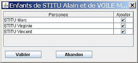
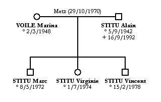
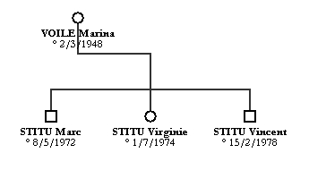

Il faut, au préalable, sélectionner un ou plusieurs couples. Cliquez sur le bouton  ou allez dans le menu Personnes et choisissez Enfants. Plusieurs situations peuvent se présenter :
ou allez dans le menu Personnes et choisissez Enfants. Plusieurs situations peuvent se présenter :
Exemple : ajout des enfants du couple Alain STITU-Marina VOILE :

Par défaut, GénéGraphe vous propose d'ajouter tous les enfants de l'union. Si vous ne voulez pas ajouter un ou plusieurs enfants, il suffit de cliquer dans la colonne Ajouter pour les décocher.
Quand vous cliquez sur Valider, le logiciel affiche les enfants sélectionnés :

Remarque : si vous retirez un des parents, le lien est maintenu avec le parent restant :
